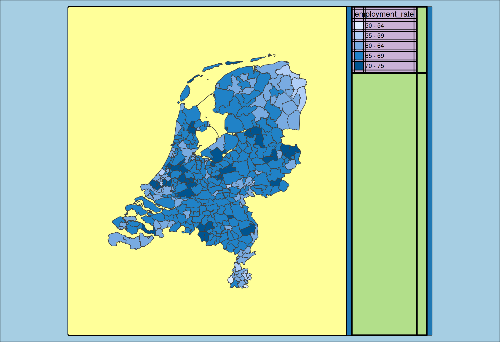
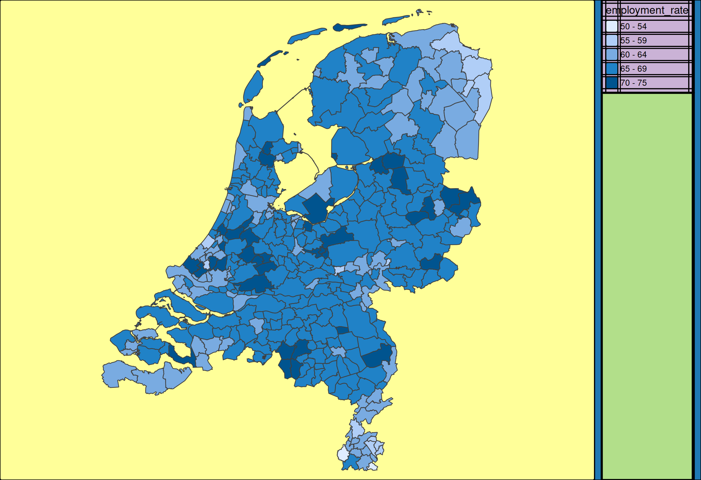
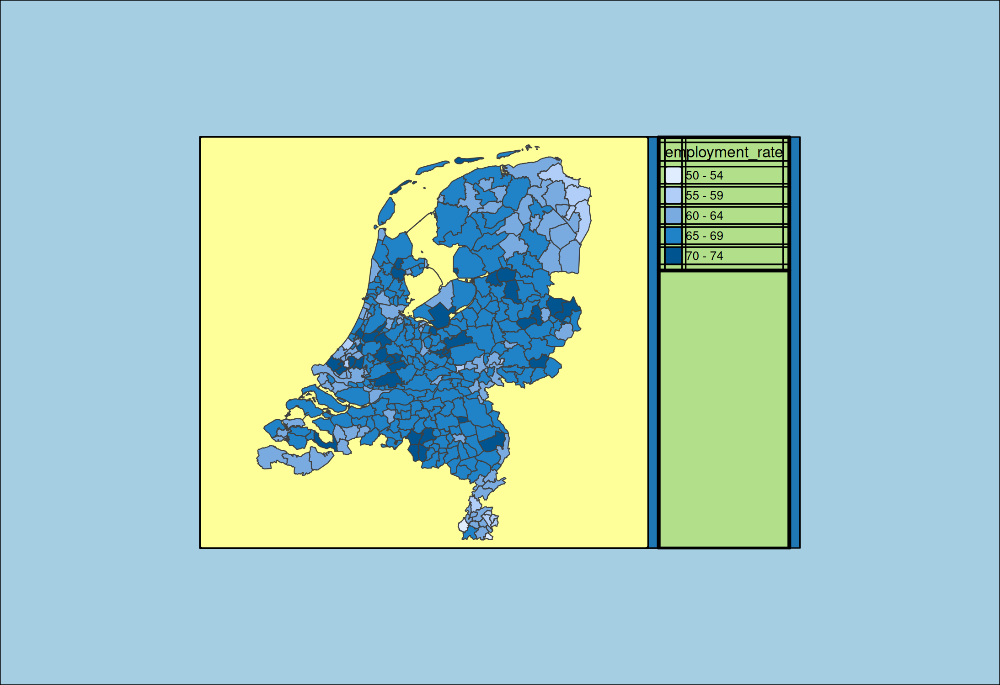

Design mode
tmap offers a special design mode, which can be enabled via tmap_design_mode. Bolow the same map, but the second time with this design mode enabled:
(tm = tm_shape(NLD_muni) +
tm_polygons(fill = "employment_rate",
fill.legend = tm_legend(position = tm_pos_in("left", "top"))) +
tm_compass(position = tm_pos_in("right", "bottom")) +
tm_scalebar(position = tm_pos_in("left", "bottom")))
tmap_design_mode()
#> design.mode: ON
tm
#> ----------------W (in)--H (in)--asp---
#> | device 7.290 8.000 0.911 |
#> | plot area 6.502 7.680 0.847 |
#> | facets area 6.502 7.680 0.847 |
#> | map area 6.502 7.680 0.847 |
#> -----------------------------------
tm_layout() and tmap options
All options related to the layout of the map, such as background color and margins, can be set via tm_layout.
These options are a subset of all tmap options, which can be set via tmap_options (a stand-alone function) or tm_options, which is supposed to be stacked with the + operator.
Inner and outer margins
Inner and outer margins can be set with the options inner.margins and outer.margins.
The inner margins are the margins between the shape (i.e. spatial geometries) and the map frame. In the design mode, the shape area with the inner margins is shown with a yellow rectangle.
tm_shape(NLD_muni) +
tm_polygons(fill = "employment_rate") +
tm_layout(
inner.margins = c(0.2, 0.2, 0.2, 0.2))
#> ----------------W (in)--H (in)--asp---
#> | device 7.290 5.000 1.458 |
#> | plot area 5.171 4.800 1.077 |
#> | facets area 4.139 4.800 0.862 |
#> | map area 4.064 4.800 0.847 |
#> -----------------------------------
The outer margins are the margins between the map frame and the device frame.
tm_shape(NLD_muni) +
tm_polygons(fill = "employment_rate") +
tm_layout(
outer.margins = c(0.2, 0.2, 0.2, 0.2))
#> ----------------W (in)--H (in)--asp---
#> | device 7.290 5.000 1.458 |
#> | plot area 3.648 3.000 1.216 |
#> | facets area 2.615 3.000 0.872 |
#> | map area 2.540 3.000 0.847 |
#> -----------------------------------
Aspect ratio
The aspect of the map frame can be set via the option asp. If so, the inner margins will be adjusted automatically.
tm_shape(NLD_muni) +
tm_polygons(fill = "employment_rate") +
tm_title("Square map") +
tm_layout(asp = 1)
#> ----------------W (in)--H (in)--asp---
#> | device 7.29 5.00 1.46 |
#> | plot area 5.53 4.80 1.15 |
#> | facets area 4.50 4.50 1.00 |
#> | map area 4.43 4.43 1.00 |
#> --------------------------------
The special value 0 means that the aspect ratio is adjusted to meet the space that is left on the device after substracting the outer margins and space occupied by the outside components (in this case just the legends).
tm_shape(NLD_muni) +
tm_polygons(fill = "employment_rate") +
tm_layout(outer.margins = c(0.2, 0.2, 0.2, 0.2),
asp = 0)
#> ----------------W (in)--H (in)--asp---
#> | device 7.29 5.00 1.46 |
#> | plot area 4.37 3.00 1.46 |
#> | facets area 3.34 3.00 1.11 |
#> | map area 3.27 3.00 1.09 |
#> --------------------------------